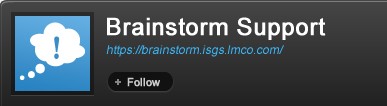

Home > Product Specification > Features > Follow and Subscribe to Streams
Follow and Subscribe to Streams
Interact with a stream
View and Manage gallery items
Overview
Eureka streams is enabled to allow users to track the activity on a particular stream. Users will be able to receive notifications and RSS updates for new activities on a chosen stream. Users will also be able to bookmark and apply content-specific filters to the streams they are interested in.
Conditions of satisfaction
Follow/Unfollow
- The knowledge worker must be able to follow any public stream.
- The knowledge worker must be able to stop following any stream he is following.
- The knowledge worker must be able to add the stream as an app to the knowledge worker’s Start Page, bookmark the stream, and/or subscribe to email notifications when the knowledge worker follows a stream.
- The knowledge worker must be able to view the option to add the stream to the Start Page, bookmark the stream, and/or notify via email checked off if the knowledge worker has already enabled the option prior to following the stream.
Email Subscription
- The knowledge worker must be able to subscribe via email to any stream
- The knowledge worker must be able to unsubscribe from email to any subscribed stream.
- The knowledge worker must be able to view an ATOM feed for a stream.
- The knowledge worker must see for each activity the user name and activity content and
for the feed to be sorted by activity date
- The system must authenticate the ATOM feeds.
Bookmarks
- The knowledge worker must be able to bookmark any stream
- The knowledge worker must be able to reorder his bookmarks
- The knowledge worker must be able to remove a bookmark.
Add to Start Page
- The knowledge worker must be able to create an app from a stream, custom stream, or
group stream.
- The knowledge worker must be redirected to the start page after creating an app from a
stream, custom stream, or group stream.
Filters
- The knowledge worker must be able to create a filter that includes one or more
colleagues, groups, or predefined streams and optional keywords.
- The knowledge worker must be warned when the title for a filter is not provided.
- The knowledge worker must be able to edit a filter.
- The knowledge worker must be able to delete a filter.
- The knowledge worker must be able to reorder filters.
Default Streams
- The knowledge worker must be able to view a stream of activity from a predefined stream
representing the streams he is following.
- The knowledge worker must be able to view a stream of activity from a predefined stream
representing everyone in the system.
- The knowledge worker must have one undeletable filter to his liked items.
- The knowledge worker must have one undeletable bookmark to his personal stream.
- The knowledge worker must be able to select, for a stream, a link that will
add a contact in their contact list.
Replying to a post notification e-mail
- The knowledge worker must be able to “reply to “an e-mail received from a post in order
to send an e-mail to the Eureka Streams e-mail box.
- The knowledge worker must be able to post a message to a stream via e-mail.
- The knowledge worker must be able to comment on an activity in stream via e-mail.
- The knowledge worker must be able to e-mail with a signature, original e-mail text, etc.
and have these extra itemsremoved allowing only the post or comment text to be processed.
- The knowledge worker must be able to send an e-mail that includes a multipart form
and/or HTML and have the HTML stripped out and/or the additional multipart forms ignored allowing only the post or comment text to be processed.
- The knowledge worker must be able to e-mail a post larger than 250 characters and have
the extra characters appear as a comment below their post.
- The knowledge worker must be able to e-mail a comment longer than 1,000 characters and
have the extra characters appear as additional comments below their comment.
User experience
Following a Stream

- A user is able to follow any stream (except his own) by clicking on the “Follow” button on their stream.

- When the user hits the “Follow” button a Subscribe modal pops up. Checking “Add this Stream to my Start Page” will add the stream to the users start page after they click “Save Changes”.
- Checking “Bookmark this Stream” will bookmark the stream after the user clicks “Save Changes”
- Checking “Notify my via Email” will sign the user up to receive email alerts on posts to the stream when the user clicks “Save Changes”
- Clicking “Save Changes” executes the changes checked.
- Clicking “No Thanks” closes the modal and ignores all of the check boxes

- A user is able to unfollow any followed stream by clicking on the “Unfollow” button. The Unfollow button shows up in the same place the follow button does.
Managing Stream Subscriptions

- Hovering over the subscriptions icon pops up the subscriptions menu.
- Clicking “Bookmark Stream” adds the stream to the knowledge worker’s bookmarks
- Clicking “Add to Start Page” adds the stream to the knowledge worker’s start page.
- Clicking “Subscribe via Email” signs the knowledge worker up to receive emails for every
post
to the stream. When clicked the menu option should change to “Unsubscribe to email”
- Clicking “RSS Feed” opens the streams RSS feed in a new window.

- Upon clicking the option to “Subscribe via Email” the knowledge worker is presented with a confirmation notification that the subscription process was sucessful.
<item>
<title>Anthony Romano: This would be an example of a message.</title>
<description>Anthony Romano: This would be an example of a message.</description>
<pubDate>Tue, 17 Aug 2010 12:58:20 +0000</pubDate>
<guid>{opensocialGUID}</guid>
<link>https://eurekastreams.org/#activity?viewId=1&listId=1&activityId=11956</link>
</item>
Managing Bookmarks

- Bookmarks can be added by clicking on “Bookmark a Stream”. When clicked, a search box opens up allowing the user to instantly search for any stream.
- Hovering over the bookmark shows a “+” sign that when clicked adds the stream to the
knowledge worker’s bookmarks.

- Hovering over bookmarks shows an “X” icon that when clicked removes the bookmark from the user’s list.
Add to Start Page


- Hovering over the RSS icon shows a menu.
- Selecting “Add to Start Page” creates an app on the knowledge worker’s Start Page.
Managing Filters

- Hovering over a filter shows an edit and delete button. Clicking edit brings up the edit modal defined below. Clicking the delete button deletes the filter.
Adding a Filter

- Input box to enter a name for the custom stream. Name fields supports up to 50 characters.
- The knowledge worker can select the following options: Everyone, Following, Groups I’ve
Joined, Posted To, Authored By, and Liked By.
- Input box to enter one or more keywords. Keywords field supports up to 50 characters per keyword and an infinite number of characters.
- When a new list is successfully saved, a warning message will appear at the top of the page telling the user: “Your stream has been successfully saved” If one or both of the required fields are left blank the following message will appear above the form: “Name field is required” and “At least one stream is required”

- The knowledge worker can select the empty text box to input 1 to many people or group
streams by typing in their name and selecting the stream.
Editing a Filter

- Input box to edit a stream name.
- The knowledge worker can select a predefined or custom stream.
- Input box to enter one or more keywords.
- When a new stream is successfully saved, a warning message will appear at the top of the page telling the user: “Your stream has been successfully saved” If one or both of the required fields are left blank the following message will appear above the form: “Name field is required” and “At least one stream is required”
- Clicking the delete icon displays a pop-up window asking the knowledge worker the following: “Apps based on this stream will need to be manually deleted from the Start Page. Are you sure you want to delete this custom stream?” If the knowledge worker clicks “yes” the stream is deleted and a warning message is displayed with a close link: “The custom stream has been deleted”.
Note: There are additional scenarios where a custom stream is automatically modified or deleted.
- If a knowledge worker leaves a private group and a stream is based on the private group’s
stream, automatically delete the stream.
- If a knowledge worker leaves a public group, do not delete the stream.
- If a public or private group is deleted and a stream is based on the private group’s
stream, automatically delete the stream.
Post Notification E-mail Text
Jeffrey H Stephens posted a message to the C&ES Communications Product Team
stream.
“Everything is going well”
To see the post follow this link.
You can reply directly to this message by replying to this email. Be mindful
to remove your email signature so as to not attach it to your comment within
Eureka.
Thank You,
Eureka Streams
Test Plan
Follow/UnFollow
- Verify a knowledge worker can follow a colleague
- Verify the follow button changes to stop following
- Verify that a modal appears allowing the knowledge worker to add the stream to his/her Start Page, bookmark the stream, or subscribe to email notifications
- Verify that the options in the modal are already checked if the knowledge worker enabled the options prior to following the stream
- Verify the ability to view the activity of the colleague being followed within the following stream
- Verify a knowledge worker can stop following a colleague
- Verify the stop following button changes to follow
- Verify the colleagues activity no longer appears in the following list
- Verify a knowledge worker can follow yourself
- Verify a knowledge worker follows his/herself by default
- Verify a knowledge worker is not able to stop following his/herself
- Verify a knowledge worker can follow a public group
- Verify the follow button changes to unfollow
- Verify the group has been added as a list on the activity page
- Verify the group list is displaying the stream for that group
- Verify a knowledge worker can leave a public group
- Verify the unfollow button changes to follow
- Verify the group list no longer appears on the activity page
Email Subscription
- Verify a knowledge worker can subscribe via email to a stream
- Verify the ability to subscribe via email to a group stream
- Verfiy the ability to subscribe via email to a persons stream
- Verify a knowledge worker can unsubscribe via email to a stream
- Verify the ability to unsubscribe via email to a group stream
- Verfiy the ability to unsubscribe via email to a persons stream
Bookmarks
- Verify a knowledge worker can bookmark a stream
*Verfiy the bookmark is added
- Verify a knowledge worker can reorder your bookmarked streams
*Verify the ability to reorder your bookmarks
- Verify a knowledge worker can remove a bookmarked stream
*Verify the bookmark is removed
Add to Start Page
- Verify a knowledge worker can create an app from a stream
- Click on the icon to create an app from a knowledge workers stream
- Verify the redirect to the start page and the presence of the app based on the knowledge workers stream which was chosen
- Click on the icon to create an app from a group stream
- Verify the redirect to the start page and the presence of the app based on the group stream which was chosen
- Click on the icon to create an app from a custom stream
- Verify the redirect to the start page and the presence of the app based on the custom stream which was chosen
Filters
- Verify a knowledge worker can create a custom stream including one or more colleagues,
predefined streams or groups and 1 or more keywords
- Verify a custom list can be created including 1 or more colleagues or group
- Verify the custom list is displayed in the list section of the activity page
- Verify the activity of the colleagues or groups added to the custom list are displayed on the list’s stream
- Verify a knowledge worker can check error handling when creating a custom stream
- Verify error handling is present when the title is not present
- Verify error handling is present when no colleagues, predefined streams, or groups have been selected
- Verify a knowledge worker can edit a custom stream
- Verify a custom stream can be edited
- Verify error handling is present when editing
- Verify a knowledge worker can delete a custom stream
- Verify the custom stream is removed from the activity page
- Verify a knowledge worker can reorder stream
- Verify default and custom streams can be reordered within the list section on the activity page
- Verify a knowledge worker can hide and show stream
- Verify custom stream are hidden by default
- Verify the ability to toggle between show more and show less
- Verify a knowledge worker can view a stream of activity from a custom stream
- Verify the custom streams are accessible in the activity page
- Verify the custom streams display only the activities of the groups or colleagues specified in the custom stream
Default Streams
- Verify a knowledge worker can view the activity stream of colleagues being followed
- Verify the following stream is predefined in the activity page
- Verify only the activities of yourself and those of the colleagues or groups being followed are displayed in the stream
- Verify a knowledge worker can view the activity stream of everyone
- Verify the everyone stream is predefined in the activity page
- Verify all activity is displayed within the everyone stream except private groups where knowledge worker is not a member
- Verify a knowledge worker can view the activity stream of liked items
- Verify the liked filter is undeleteable
- Verify the liked items stream is predefined in the activity page
- Verify that only activities which have been liked by the knowledge worker are displayed on this list
- Verify a knowledge worker can view the activity stream of personal activity
- Verify the the bookmark to the knowledge workers personal stream is undeletable
- Verify the bookmark to the knowledge workers personal stream is predefined on the activity page
- Verify that only activities which have been posted to the knowledge workers personal stream are displayed
Replying to a post notification e-mail
- Verify a knowledge worker can “rely to” an email recieved from a post
- Verify a knowledge worker recieved an email
- Verify the ability to reply to the email
- Verify the email was sent to the Eureka Streams e-mail box
- Verify a knowledge worker can add e-mail address to their contacts list on their
streams
- Verify the ability to select a contact from the drop down selection
- Verify the ability to add a contact in their contact list
- Verify a knowledge worker can posts message to a stream by via e-mail.
- Verify the ability to e-mail a posts message with a signature
- Verify the ability to change the following items on the e-mail, allowing the individual posts to process.
- Verify the ability to edit text from the email
- Verity the abitity to remove items such as original e-mail text
- Verify e-mail a post is limited to 250 characters
- Verify if e-mail post exceed 250 characters, the extra charecters appear as a comment below their post
- Verify a knowledge worker can comment on posts
- Verify the ability to e-mail comments on a post with a signature
- Verify the ability to change the following items on the e-mail, allowing the individual comments to process.
- Verify the ability to edit text from the email
- Verity the abitity to remove items such as text
- Verify e-mail a comment is limited to 1,000 characters
- Verify if e-mail comment exceed 1,000 characters, the extra charecters appear as additional comments below their comment
| PAGE CONTENTS
Version 1.0
Documentation is also available for all of the following versions:
0.9 | 1.1 | 1.2 | 2.0
|